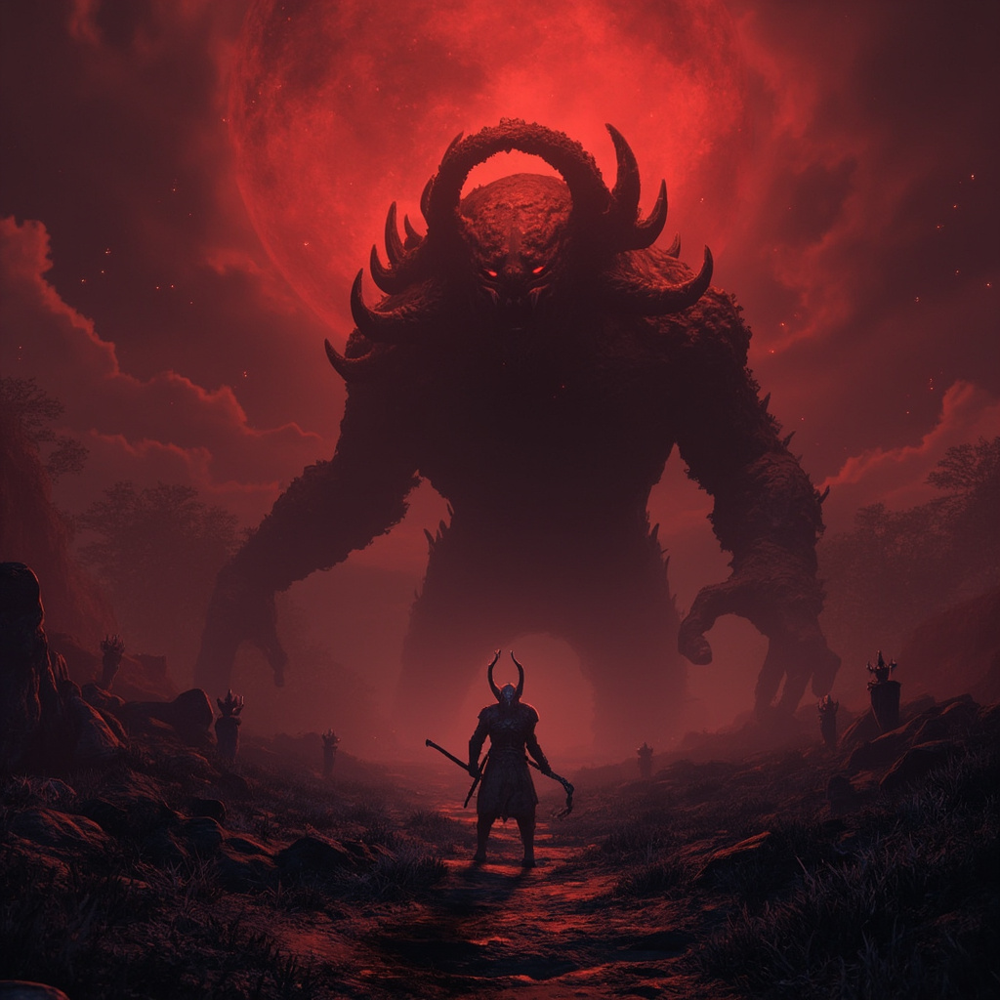

Every boss in Elden Ring Nightreign has a unique set of elemental resistances and status vulnerabilities. Picking the right damage type can cut a boss fight's duration by 30-50% — and in a roguelike where every minute of Night phase counts, that advantage translates directly into survival.
This guide serves as your complete weakness reference. It covers every major boss encounter in Nightreign, including Patch 1.03.2's new Nightlord, the Dusk Warden. Bookmark this page — you will come back to it every time you face a new boss for the first time.
Complete Elemental Weakness Table
| Boss | Location | Fire | Holy | Lightning | Dark | Physical |
|---|---|---|---|---|---|---|
| Fell Omen | Limberald Depths | Weak | — | Weak | Resists | — |
| Night Warden | Night Phase (Random) | — | Weak | Resists | — | — |
| Grave Sentinel | Cemetery Gate | Weak | Weak | — | Resists | — |
| Stormcaller | High Peaks | — | — | Resists | Weak | + Stance |
| Abyssal Knight | Depth Chambers | Resists | Weak | — | Resists | + Bleed |
| Dusk Warden | Ashen Hollow | — | Weak | — | Resists | + Stance |
| Crimson Wyrm | Dragon Peak | Resists | Weak | — | — | + Bleed |
| Phantom Council | Roundtable Ruins | Weak | Weak | — | Resists | — |
Status Effect Vulnerabilities
Status effects can be just as valuable as elemental damage type. Applying the right status can stagger a boss out of a dangerous attack chain or deal massive percentage-based damage over time.
| Boss | Bleed | Poison | Stance Break | Notes |
|---|---|---|---|---|
| Fell Omen | Vulnerable | Vulnerable | Normal | Bleed procs deal ~12% max HP; ideal for bleed builds |
| Night Warden | Normal | Normal | Vulnerable | Stance break cancels its AoE charge — high priority |
| Grave Sentinel | Vulnerable | Immune | Normal | Undead type — immune to poison, weak to bleed |
| Stormcaller | Immune | Vulnerable | Vulnerable | Two stance breaks = guaranteed lightning resistance drop |
| Abyssal Knight | Vulnerable | Vulnerable | Normal | Bleed + Poison stack for accelerated damage phases |
| Dusk Warden | Normal | Immune | Vulnerable | Stance break prevents Wraith Shade summon in P2 |
| Crimson Wyrm | Vulnerable | Normal | Normal | Bleed proc on head deals double damage |
| Phantom Council | Normal | Immune | Vulnerable | Stance break interrupts the Council's teleport combo |
Boss-by-Boss Strategy Breakdown
Fell Omen — Limberald Depths
Difficulty: Medium · Recommended Level: 15+ · Night Phase: 1
The Fell Omen is often the first mini-boss new players face after clearing the tutorial zone. It is a hulking, brutish enemy with slow but devastating attacks.
Key Weaknesses: Fire and Lightning damage. Physical damage is effective but resisted by 15% in its armored phase (below 50% HP).
Status Strategy: Apply bleed to accelerate through its first phase. Two bleed procs typically trigger its phase transition, skipping several attack cycles.
Phase 1 (100-50% HP): The Fell Omen uses heavy overhead slams and wide sweeps. Dodge toward its back leg — attacks have a recovery window there that is 0.5s longer than in front. Safe window after each slam is roughly 3 seconds.
Phase 2 (Below 50% HP): Armor activates, reducing physical damage by 25%. The Fell Omen gains a charge attack that covers 60% of the arena. Jump over the charge (not dodge roll) — the hitbox is ground-level and jumping avoids it completely. After a charge miss, the boss is stunned for 4 seconds. This is your biggest damage window.
Grave Sentinel — Cemetery Gate
Difficulty: Medium · Recommended Level: 20+ · Night Phase: 1-2
The Grave Sentinel is an undead knight guarded by respawning skeletal adds. It patrols Cemetery Gate, a constricted arena with limited room to maneuver.
Key Weaknesses: Fire and Holy damage. The Sentinel is an undead-type boss — holy damage stops its skeleton adds from respawning after killing them.
Status Strategy: Bleed is highly effective. Poison is completely immune (undead type). Use the Blood Grease consumable if your class can apply it.
Phase 1 (100-50% HP): The Sentinel uses broad shield bashes and spear thrusts. Focus on killing the skeleton adds first — they explode for dark damage after 15 seconds if not dealt with. Holy-infused weapons one-shot the adds.
Phase 2 (Below 50% HP): The Sentinel discards its shield and dual-wields its spear with increased attack speed. It gains a spinning attack that covers 360 degrees and combos into a thrust. The safe window is strafing right — the spin attack's recovery is slow if it does not hit you, giving you 2.5 seconds for punishes.
Stormcaller — High Peaks
Difficulty: Hard · Recommended Level: 30+ · Night Phase: 2-3
The Stormcaller is a lightning-wielding humanoid boss with extremely punishing AoE attacks. It has very high mobility and will frequently reposition across the arena.
Key Weaknesses: Dark damage and stance breaks. Lightning damage is completely resisted (the boss absorbs it and heals for 5% of the damage dealt). Physical stance breaks are your primary path to victory.
Status Strategy: Poison is effective — the Stormcaller has low poison resistance and takes 15% max HP over 30 seconds per application. Bleed is completely immune. Stance breaks are the real MVP: every two stance breaks temporarily disable the Stormcaller's lightning aura for 10 seconds.
Phase 1 (100-40% HP): The Stormcaller spams lightning bolts from range and uses a lightning-infused spear in melee. Stay close — its ranged attacks are harder to dodge than its melee swings. The spear combos are punishable after the third hit.
Phase 2 (Below 40% HP): Enrages. Casts Storm's Wrath — a full-arena lightning AoE with a 2-second windup. Watch for the ground glow telegraph and roll toward the boss at 1.5 seconds. If you are at range, the AoE is much harder to avoid. The safe spot is directly under the boss during the cast.
Abyssal Knight — Depth Chambers
Difficulty: Hard · Recommended Level: 35+ · Night Phase: 2-3
A heavily armored knight that phase-shifts between physical and ethereal forms. The Abyssal Knight is a DPS check — if you cannot burn through its ethereal phase quickly, it regenerates 20% of its max HP.
Key Weaknesses: Holy damage. Fire and dark are both resisted. Bleed is your best status option — it deals damage that bypasses the ethereal form's damage reduction.
Status Strategy: Stack bleed and poison simultaneously. Bleed bypasses the ethereal phase damage reduction entirely. Poison ticks during its physical phase add up to roughly 8% max HP per application. Use the Executor class with its increased execute threshold (45% HP, Patch 1.03.2) to exploit the bleed window.
Phase 1 (100-60% HP, Physical): The Knight uses slow, heavy greatsword swings with long recovery. Parry windows are generous — 3 successful parries trigger a riposte that deals 15% max HP damage.
Phase 2 (60-40% HP, Ethereal): The Knight becomes translucent and takes 50% reduced damage from all sources except bleed. It dashes rapidly and projectiles phase through walls. Use AoE attacks — the Knight's hitbox is large despite its visual form. If the ethereal phase lasts longer than 20 seconds, the Knight returns to physical form with 20% HP restored.
Phase 3 (Below 40% HP): Alternates between physical and ethereal every 15 seconds. Time your burst windows for the physical transitions. Save your class skill and Ashes of War for these windows.
The Dusk Warden — Ashen Hollow (Patch 1.03.2)
Difficulty: Very Hard · Recommended Level: 40+ · Night Phase: Any · New in Patch 1.03.2
The Dusk Warden is the new optional Nightlord introduced in the Deep of Night update. Unlike other Nightlords, it can appear during any Night phase, making it an unpredictable threat that demands preparation. It patrols the new Ashen Hollow sub-region.
Key Weaknesses: Holy damage. Dark damage is resisted. Stance breaks are effective — landing a break during the Warden's summon animation cancels the Wraith Shades entirely.
Status Strategy: Poison is immune. Bleed is normal effectiveness. Stance breaks are the priority — a well-timed break in Phase 2 prevents the add spawn, which is the fight's wipe mechanism.
Phase 1 (100-75% HP): The Warden uses slow greatshield sweeps with large AoE indicators. Each shield slam has roughly 2.5 seconds of recovery. Learn the rhythm — every slam is punishable. Do not panic roll; the windup is generous and the recovery is consistent.
Phase 2 (40-75% HP): Summons four Wraith Shades that chase the nearest player. The Warden continues attacks but at reduced frequency. Priority: Clear the shades immediately (they have ~30% of a standard elite's HP). Holy damage one-shots the shades. If you lack holy damage, use AoE skills to clear them in 2-3 hits each.
Phase 3 (Below 40% HP): Enrages. Attack speed increases by 40%. Gains Dusk Rush — a gap-closing lunge that tracks the target. This is the wipe window. Positioning is everything: stay close to the Warden to minimize the lunge's travel distance. Cooldown management becomes critical here — save your healing flask and class skill for this phase.
Crimson Wyrm — Dragon Peak
Difficulty: Very Hard · Recommended Level: 45+ · Night Phase: 3
The Crimson Wyrm is a fire-breathing dragon boss with devastating breath attacks and a massive HP pool. It is a marathon fight — pacing your stamina and healing resources is more important than burst damage.
Key Weaknesses: Holy damage. Fire is completely nullified. Bleed procs on the Wyrm's head deal double damage.
Status Strategy: Bleed is the most efficient status here. Head shots with bleed proc for roughly 8% max HP per trigger. Poison is moderately effective but ticks are reduced by 50% due to the Wyrm's regeneration passive.
Phase 1 (100-50% HP): The Wyrm stays grounded and uses fire breath (frontal cone), tail sweep (back arc), and claw swipes. Stay at its flank — the safest position is just behind its front leg. When it rears back, expect fire breath and sprint sideways immediately.
Phase 2 (Below 50% HP): The Wyrm takes flight. It strafes the arena with fire breath, creating a lethal zone that covers ~60% of the ground. Use the terrain — rock formations provide cover from the strafing breath. When it lands (after 3 strafing passes), it is exhausted for 5 seconds. This is your primary damage window.
Phase 3 (Below 25% HP): Returns to grounded combat but adds a new attack: Infernal Roar, a full-arena fire nova with a 3-second windup. Use the night cycle strategy to time your encounters — fighting the Wyrm early in the Night phase gives you more margin for error.
Phantom Council — Roundtable Ruins
Difficulty: Very Hard · Recommended Level: 50+ · Night Phase: 3+ · Endgame Encounter
The Phantom Council is technically a single boss but behaves like a multi-target encounter — three spectral council members take turns attacking while the others observe. The twist: the observing members can cast debuffs from the sidelines.
Key Weaknesses: Fire and Holy. Dark damage is resisted by all three members. Stance breaks on the active member interrupt the others' debuff casts.
Status Strategy: Poison is immune (spectral type). Bleed is normal. Stance breaks are critical — breaking the active member's stance causes a 3-second global stun on all three members.
Phase 1 (100-60% HP): The three members cycle in a fixed order: Sword → Staff → Bow. The Sword member is aggressive, the Staff member debuffs (slow + defense down), and the Bow member pelts you from range. Kill order: focus the Staff member first — removing the debuff source makes the fight dramatically easier.
Phase 2 (60-30% HP): The order becomes random. The members gain their second abilities — Sword gains a gap closer, Staff gains a damaging DoT debuff, Bow gains arrow volley (multi-target). Adapt to each member's new ability as they rotate in.
Phase 3 (Below 30% HP): All three members attack simultaneously for 10 seconds before returning to rotation. This is a pure DPS check. Use consumables, class skills, and Ashes of War liberally. If you survive the 10-second onslaught, the members are staggered for 6 seconds — unload everything.
Element Damage Quick Reference
If you only remember a few rules from this guide, remember these:
- Holy is the safest default: 5 out of 8 major bosses are weak to Holy. It is never resisted by any boss. If you can put a Holy infusion on your weapon, do it.
- Dark is the riskiest: 3 bosses resist Dark, and only the Stormcaller is explicitly weak to it. Do not default to Dark without checking the table.
- Fire is broadly effective: 4 bosses weak, only 2 resist. Fire is your backup element when Holy is unavailable — most builds can access some form of fire damage through consumables or infusions.
- Stance breaks win hard fights: The Dusk Warden, Stormcaller, and Phantom Council all have fight-altering mechanics that stance breaks can cancel. If you are stuck on any of these three, spec into stance damage and watch the difficulty drop.
- Bleed is the best universal status: Only the Stormcaller is immune to bleed. Every other major boss is neutral or vulnerable. Bleed procs scale with your weapon level, making it viable from early to late game.
For class-specific build recommendations that match these weakness profiles, see the full Classes Tier List. For step-by-step boss mechanics and common mistakes, read How to Beat Every Main Boss.